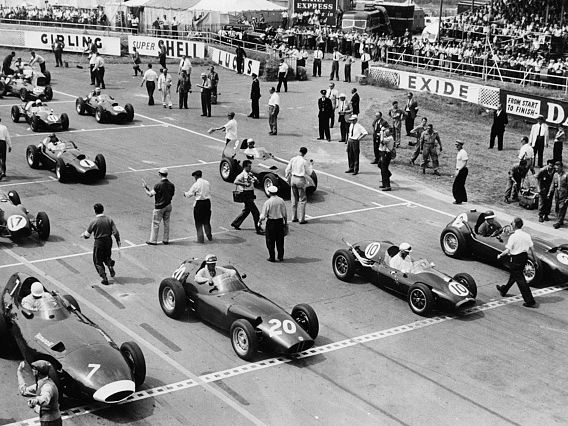

La grande storia della F1 |
|
|  | Alcuni cenni storici |
| Il campionato mondiale di Formula 1 ha radici molto profonde. Ogni singolo evento ha portato a grandissimi cambiamenti persino nella società attuale. Qui troverete dei link riguardo i principali eventi storici! | |